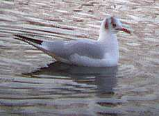
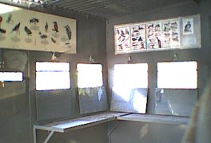
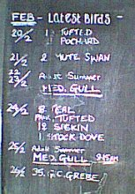
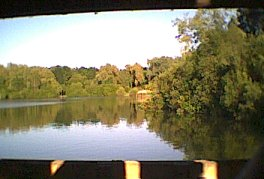
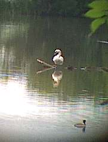
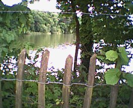
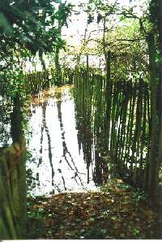

Diary 2001
December 20th 2001
OK, the reopening after 3 months of closure was a big event, but that didn't mean I had to stop filling in the diary!
The recent cold weather has been very good for ducks. Well good for watching them anyway, I don't know that they actually enjoy the cold. The Teal numbers have been the best for 10 years, with regular Shoveler and Wigeon too. A Goosander arrived with the first frosts in November and a few of the less usual duck like Gadwall and Pintail have also put in an appearance.

I am trying out a new camera which might lead to better pictures on this site. It's got a higher resolution than the one I've been using, but seems to suffer camera shake more badly. An early result above taken through my 8x40 binoculars.
June 19th 2001 Reopened!
The reservoir was appropriately bathed in sunshine today as the padlocks came off after more than three and a half months of closure due to Foot and Mouth restrictions.

The long spell of closure is evidenced on the blackboard with the 'latest' sightings still showing the end of February.

June 17th 2001


The MAFF restrictions were lifted on 15th June (friday afternoon), but the gates remain padlocked today. I contented myself with watching Mute Swan and Great Crested Grebe from the northern end.
June 11th 2001

With the reservoir still firmly closed, we are reduced to peering through the fence from the northern end, wondering what we are missing.
Theoretically the local restrictions could be lifted anytime now.
April 25th 2001
In a way there has been nothing to report, because we cannot get access to the reservoir due to foot and mouth restrictions. In another way, perhaps I should in fact say a lot about that. OK, not too much.
For the wildlife, the lack of both dogs and humans from the reservoir can only be a good thing. Much less disturbance will be occurring, especially in the fields and especially over the Easter holidays. Nesting birds will have had to worry just about their natural predators like magpies rather than being disturbed by passing people and pets. However, while few of us wish to deliberately disturb the wildlife, we do want to enjoy the natural relaxation that many us get from visiting an area like this.
My perception about foot and mouth changed last week when I went on holiday to Cornwall.
To get there we travelled down the A30 through North Devon, one of the worst affected areas. Firstly to actually see the huge fires burning near Holsworthy, just like the pictures on TV made it all suddenly much more real. You could look at a whole hillside of fields with not a live animal in sight. My main feeling was of a great sympathy for those directly affected.
But there is a good side too. The maps of Devon being put out by MAFF suggest that the whole of North Devon has been wiped out, but in fact there were more fields containing sheep and cattle than I expected and the impression as we approached Cornwall was that all was OK. It's not all OK of course, but I'm greatly pleased to see the large reduction in new cases. Also the locations are concentrated in already badly hit areas and not seeming to spread any more.
The foot and mouth case at Yarty farm has meant that Chard Reservoir just falls inside an officially infected area. This is an isolated case so far and another month could see the lifting of many restrictions in the Chard area. Let's hope so for everyone's sake.
February 24th 2001
Flooding

I thought there should be an entry about the recent flooding. One of the many problems with keeping the recent sightings updated has been actually getting near enough to the reservoir to see the birds. You can get some idea from this photo of the path that leads to the hide.The hide was underwater when this picture was taken and this wasn't even the worst day.
Even when the water subsided, the wooden walkway to the hide was covered in very slippery mud and had to be kept locked until made safe.If anyone has information or observations on the wildlife at Chard reservoir:
please email me: kevin@chardres.totalserve.co.uk
Diary for year 2000